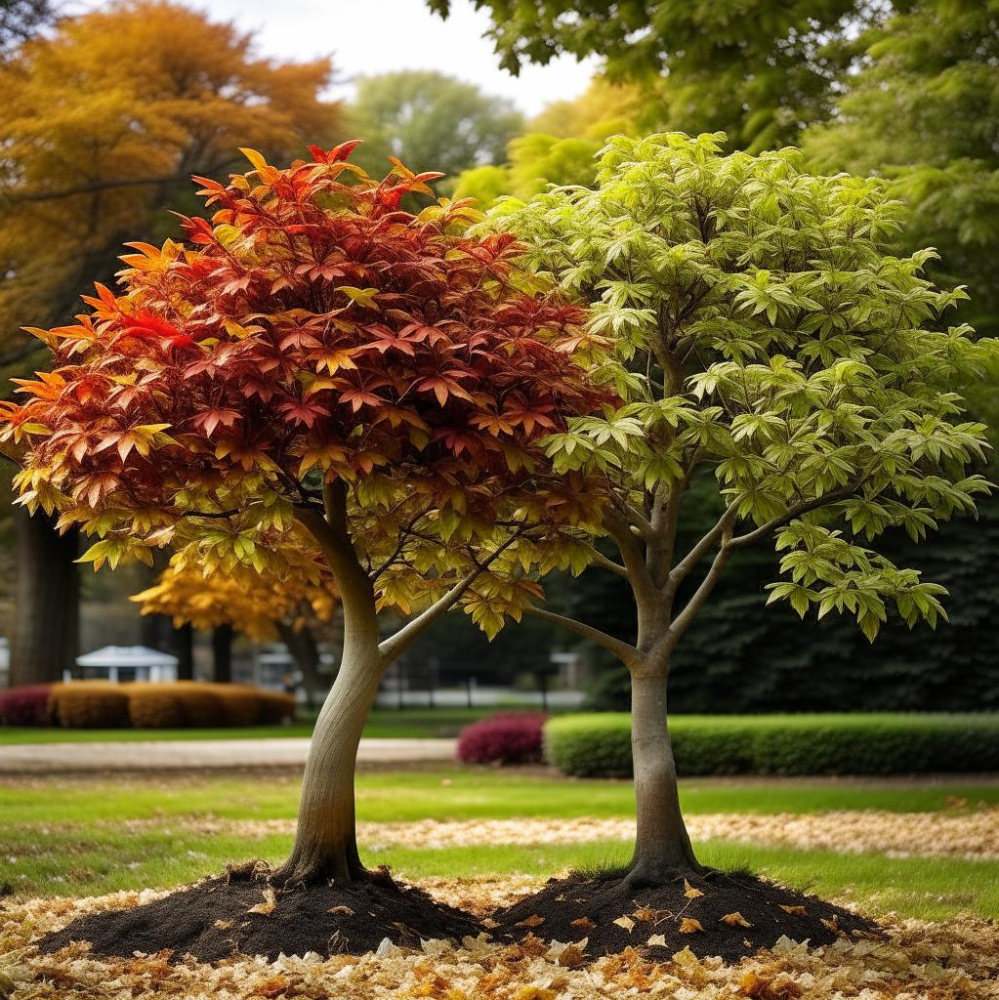

Два клена
Евгений Шварц
Действующие лица:
В а с и л и с а - р а б о т н и ц а
Ф ё д о р
Е г о р у ш к а, И в а н у ш к а - её сыновья
Б а б а - Я г а
М е д в е д ь
К о т о ф е й И в а н о в и ч
Ш а р и к
М ы ш и
ДЕЙСТВИЕ ПЕРВОЕ Два молодых клёна стоят рядышком на лесной поляне. Тихий, ясный день. Но вот проносится ветерок, и правый клён вздрагивает, словно проснувшись. Макушка его клонится к левому деревцу. Раздаётся шорох, шёпот, и клён говорит по-человечески.
П е р в ы й К л ё н. Братец, братец Федя! Ветерок подул. Проснись!
В т о р о й К л ё н. Тише, тише, Егорушка, я маму во сне вижу.
Е г о р у ш к а. Спроси, ищет нас мама?
Ф ё д о р. Говорит, ищет.
Е г о р у ш к а. Спроси, простила нас мама за то, что мы из дому убежали?
Фёдор. Говорит, простила.
Е г о р у ш к а. Спроси, знает ли она, что Баба-Яга превратила нас в клёны?
Ф ё д о р. Говорит: ну что ж, мало ли что в дороге случается.
Е г о р у ш к а. Спроси, долго ли нам тут ещё томиться?
Ф ё д о р. Мама, мама! Долго нам тут ещё томиться? Мама!.. Пропала! Я проснулся. Здравствуй, братец.
Е г о р у ш к а. Здравствуй. Не плачь, ты не маленький.
Ф ё д о р. Я не плачу. Это роса.
Е г о р у ш к а. В такой ясный день разве можно плакать? Каждая травка радуется, каждая ветка, и ты радуйся.
Ф ё д о р. Я радуюсь. Я верю: вот-вот придёт наша мама, и мы услышим её зов: Фёдо-о-ор! Его-о-о-рушка!
Г о л о с. Фёдо-о-ор! Его-о-орушка!
Е г о р у ш к а. Эхо?
Ф ё д о р. Что ты, что ты! Забыл, как хитра Баба-Яга? Никто нас с тобой не слышит - ни люди, ни птицы, ни звери, ни вода, ни ветер, ни трава, ни деревья, ни само эхо.
Г о л о с, Егорушка-а-а-а! Феденька-а-а!
Ф ё д о р. Молчи, Не отвечай, это Баба-Яга нас дразнит, хочет до слез довести. Она под любой голос подделывается.
Г о л о с (совсем, близко). Егорушка, сынок! Феденька, родной! Это мама вас по всему свету ищет, а найти не может.
Ф ё д о р. Она! Баба-Яга как ни ловка, а не может звать нас так ласково. Мама, мама! Вот мы тут стоим, ветками машем!
Е г о р у ш к а. Листьями шелестим!
Ф ё д о р. Мама! Мама!
Е г о р у ш к а. Уходит!
Ф ё д о р. Нет, стоит, оглядывается. Не может она уйти.
Е г о р у ш к а. Повернула! К нам, к нам спешит!
На поляну выходит высокая крепкая женщина лет сорока, за плечами - мешок, на поясе меч. Это Василиса-работница.
Ф ё д о р. Мама, мама! Да какая же ты печальная!
Е г о р у ш к а. А волосы-то серебряные.
Ф ё д о р. А глаза-то добрые.
Е г о р у ш к а . А у пояса отцовский меч.
В а с и л и с а. Дети мои, дети, бедные мои мальчики! Два года я шла без отдыха, а сейчас так и тянет отдохнуть, будто я вас уже и нашла.
Ф ё д о р. Мы тут, мама!
Е г о р у ш к а. Мама, не уходи!
В а с и л и с а. Клёны шумят так ласково, так утешительно, что я и в самом деле отдохну. (Снимает мешок, садится на камень.) Кто это там по лесу бродит среди лета в шубе? Эй, живая душа, отзовись!
Ф ё д о р. Мама, не надо!
Е г о р у ш к а. Это Бабы-Яги цепной медведь!
В а с и л и с а. Ау, живая душа! Поди-ка сюда!
Медведь с рёвом выбегает на поляну.
М е д в е д ь. Кто меня, зверя лютого, зовёт? Ох, натворю сейчас бед, небу жарко станет! (Видит Василису, останавливается как вкопанный.) Ох, беда какая! Зачем ты, сирота, пришла? Я только тем и утешаюсь, что никто сюда не забредает, никого грызть, кусать не приходится. Мне это не по душе - я, сирота, добрый.
В а с и л и с а. Ну, а добрый, так и не трогай меня.
М е д в е д ь. Никак нельзя. Я с тем к Бабе-Яге нанялся.
В а с и л и с а. Как же тебя, беднягу, угораздило?
М е д в е д ь. По простоте. Собака и кот жили-жили у хозяина да и состарились. Дело житейское, со всяким может случиться. А хозяин их возьми да и рассчитай. Гляжу - бродят, есть просят. Что тут делать? Кормил, кормил, да разве на троих напасёшься? Взял у Бабы-Яги пуд пшена в долг. А она меня за это в кабалу на год. В цепные медведи.
В а с и л и с а. А где же цепь-то?
М е д в е д ь. Срываюсь всё. Уж больно я силен.
В а с и л и с а. И долго тебе ещё служить?
М е д в е д ь. Третий год на исходе, а она всё не отпускает. Как придёт время расчёт, брать, она меня запутает, со счёту собьёт - и служи опять! Прямо беда!
В а с и л и с а. Бедный Михайло Потапыч!
М е д в е д ь. Не жалей ты меня, а жалей себя, сироту. (Ревёт.) Пропадёшь ни за грош! Я-то не трону, Баба-Яга погубит.
В а с и л и с а. Не плачь, Мишенька. Я тебя мёдом угощу.
М е д в е д ь. Не надо. Разве меня утешишь, когда я так загоревал! А какой мёд у тебя?
В а с и л и с а (достаёт из мешка горшок) . Гляди!
М е д в е д ь. Липовый. Ну давай, может, мне и в самом деле полегчает. Да ты его весь давай, всё равно тебе, сироте, пропадать.
В а с и л и с а. Нельзя, Мишенька. Сыновьям несу гостинец.
М е д в е д ь. А где ж они у тебя?
В а си л и с а. Пропали, Михайло Потапыч.
М е д в е д ь. Ох, горе какое! Да как же это? Да почему же это? Да когда же это?
В а с и л и с а. Ты кушай да слушай, а я расскажу Тебе всё по порядку. Муж мой был воин, Данила-богатырь. Ты о Змее Горыныче слыхал?
М е д в е д ь. Как не слыхать! Он деда моего мимолётом, для смеха, взял да и опалил огнём.
В а с и л и с а. А мой Данила-богатырь Змея Горыныча убил, да и сам в том бою голову сложил. Стали мы жить вчетвером: я да три сына - Фёдор, Егорушка, Иванушка. Исполнилось Фёдору тринадцать лет, и пошёл он стадо встречать. А козёл у нас был строгий, что твой дикий. Встал он на дыбки - и на Федю. А Федя его за рога, да и оземь. Возвращается сын домой: так и так, мама, я - богатырь. Я ему: опомнись, мальчик! Какой же ты богатырь - ни силы, ни умения, ни грамотности. Злодей твои годы считать не станет, а только порадуется твоей слабости. Коня без моей помощи ты подковать не сумеешь. Выедешь на распутье, а там камень, а на камне надпись - что ждёт путника на тех путях. Богатырь должен на всём скаку, не слезая с коня, прочесть надпись и выбрать правильный путь. И здесь ты, сынок, ошибёшься. Погоди! Придёт твоё время - сама тебя отпущу. Молчит. И ночью сбежал.
М е д в е д ь. Ох! Куда?
В а с и л и с а. Со злодеями сражаться, за обиженных заступаться.
М е д в е д ь. Это славно.
В а с и л и с а. Чего уж лучше. Да только наутро принесли прохожие его меч. Перевязь перетёрлась, а богатырь и не заметил. А через три дня и конь богатырский прискакал. Обидел его хозяин: не чистил, не купал, овса не засыпал.
Ф ё д о р. Я, мама, только об одном думал: как бы с кем подраться.
В а с и л и с а. А сын так и не вернулся домой.
М е д в е д ь. Ох!
В а с и л и с а. Прошло три года - исполнилось Егорушке тринадцать лет. И напал на него бык. А Егорушка его за нос да и на цепь. Приходит ко мне: так и так, мама, я - богатырь. А ночью сбежал. А через сорок дней прибежал домой его конь. Стремена звенят, а в седле никого. Глянул на меня конь, заплакал и грянулся на землю. И дух из него вон.
Е г о р у ш к а. Он видел, что со мной сталось.
В а с и л и с а. Как тут быть? Оставила я хозяйство на Иванушку, хоть ему только десять лет, и отправилась на поиски.
М е д в е д ь. И давно ты медвежат своих ищешь?
В а с и л и с а. Третий год на исходе.
М е д в е д ь. Ох, горе, горе! Встретишь и не узнаешь.
В а с и л и с а. Узнаю. Кто из дому без толку сбежал - не растёт и не умнеет. Им всё по тринадцати лет.
Ф ё д о р. Это верно, мама.
Е г о р у ш к а. Мы с Фёдором теперь ровесники.
В а с и л и с а. И привели меня поиски в этот тёмный лес. Не слыхал ли ты, Мишенька, где мои детки?
М е д в е д ь. Молчи, не расспрашивай, а то, как тот конь, я грянусь оземь и помру с горя. Мне тебя жалко, а помочь не могу.
Ф ё д о р. Это верно.
Е г о р у ш к а. Он и не видал, как мы превратились в клёны.
В а с и л и с а. Что ж, придётся Бабу-Ягу расспросить. Веди меня к ней!
М е д в е д ь. Её дома нет. Раньше вечера не вернётся.
В а с и л и с а. А где её дом?
М е д в е д ь. А её дом - избушка, на курьих ножках, сегодня здесь, а когда и там. Известно, куры. Им бы только бродить да в земле копаться.
В а с и л и с а. Пойдём поищем избушку. Не там ли мои мальчики спрятаны?
М е д в е д ь. А зачем искать? Сама придёт. Цып, цып, цып!
Шум, треск, кудахтанье. Из чащи выходит избушка. На каждом её углу по две курьих ножки. Василиса подходит к избе.
В а с и л и с а. Смело живёте, не опасаетесь. На двери замка нет?
М е д в е д ь. Нет, Баба-Яга на курьи ножки надеется. Они чужого забрыкают.
В а с и л и с а. Строгие?
Подходит к избе. Курьи ножки брыкаются.
А что, если к ним с лаской подойти?
М е д в е д ь. Попробуй. Они этого отроду не видывали.
В а с и л и с а. Куры мои, курочки, двору вы украшение, а хозяевам утешение. Слушайте, какую песенку я про вас сложила. (Поёт.) ОЙ вы, курочки мои, Куры рябенькие!
Кто ни глянет - Смирно станет, Залюбуется.
Не орлицы ли, Не жар-птицы ли, Не царицы ли заморские В курятнике живут?
Очи кругленькие, Крылья крепенькие, Когда по двору идут, Словно по морю плывут.
Расступайся, народ:
Куры вышли из ворот, Наши куры государыни, Хохлатушки!
Под песню эту курьи ножки сначала переминаются, а потом, пускаются в пляс. Кончив петь, Василиса подходит к избушке. Ножки стоят смирно.
Вот так-то лучше!
Распахивается дверь. За дверью в кресле сидит Баба-Яга.
М е д в е д ь. Баба-Яга! Откуда ты взялась, злодейка?
Б а б а - Я г а. Молчать, а то проглочу! Цепному псу полагается радоваться, увидевши хозяйку, а ты ругаешься! (Прыгает на землю. Избе.) Ступай прочь!
Изба уходит.
Здравствуй, Василиса-работница. Давно тебя жду.
В а с и л и с а. Ждёшь?
Б а б а - Я г а. Давно жду. Я очень ловко приспособилась ловить вас, людишек. Я, Баба-Яга, умница, ласточка, касаточка, старушка-вострушка!
В а с и л и с а. А ты себя, видно, любишь?
Б а б а - Я г а. Мало сказать люблю, - я в себе, голубке, души не чаю. Тем и сильна. Вы, людишки, любите друг дружку, а я, ненаглядная, только себя самоё. У вас тысячи забот - о друзьях да близких, а я только о себе, лапушке, и беспокоюсь. Вот и беру верх. (Смотрится в зеркало) Золото моё! Чего тебе, старушке-попрыгушке, хочется? Чайку или водицы? Пожалуй, что водицы. Из колодца или из болотца?
Пожалуй, из болотца, она тиной пахнет. Василиса, беги на болотце, принеси воды ведёрко.
В а с и л и с а. Я тебе не слуга.
Б а б а - Я г а. Послужишь мне, послужишь! Я очень хорошо умею ловить вас, людишек. Поймаешь одного человечка на крючок - сейчас же и другие следом потянутся. На выручку. Брат за братом, мать за сыном, друг за другом. Ты, говорят, на все руки мастерица?
В а с и л и с а. Пока трёх сыновей вырастила - всему научилась.
Б а б а - Я г а. Такую работницу мне и надо. Хочешь ребят своих спасти и домой увести - поступай ко мне на службу. Служи мне, пока я не похвалю. А похвалю - забирай ты своих детёнышей да и ступай на все четыре стороны.
М е д в е д ь. Не нанимайся! От неё доброго слова не дождёшься. Она только себя и хвалит.
Б а б а - Я г а. Молчи, ты не понимаешь меня!
М е д в е д ь. Очень хорошо понимаю.
Б а б а - Я г а. Нет! Меня тот понимает, кто мною восхищается. Отвечай, Василиса, согласна? Делай, что приказано, старайся, и если я хоть единый разик работу твою похвалю, ха-ха, то вольная воля твоим сыновьям. Вот я что придумала, мушка-веселушка.
В а с и л и с а. Работа меня от всех бед спасала. Возьмусь! Авось и похвалишь, не удержишься. Но только покажи мне сыновей. Тут ли они. Не обманываешь ли.
Б а б а - Я г а. Показать не покажу - уж очень они у меня надёжно заперты, - а услышать ты их услышишь. По моему велению, по моему хотению, поговорите, сыновья, с матерью. (Дует изо всех сил.) Клёны шелестят.
Ф ё д о р. Мама, мама, не оставляй нас!
Е г о р у ш к а. Мама, хоть мы и большие, а плохо нам, как маленьким.
В а с и л и с а. Фёдор, Егорушка! Где вы?
Б а б а - Я г а. Молчать, не отвечать! Поговорили - и довольно. (Перестаёт дуть.) Клёны умолкают.
Василиса, остаёшься?
В а с и л и с а. Остаюсь!
Б а б а - Я г а. Этого-то мне и надо. Прощай, служанка! Некогда мне дома сидеть, с бабами разговаривать. Меня в тысячи мест ждут. Того ограбь, того побей, того накажи ни за что ни про что! Всем я, злодеечка, нужна! Прощай!
В а с и л и с а. Прощай, Баба-Яга!
Баба-Яга исчезает с шумом и свистом и тотчас же появляется как из-под земли.
Б а б а - Я г а. Ты тут дом прибери без меня так, чтобы любо-дорого было смотреть.
В а с и л и с а. Будь покойна, приберу.
Б а б а - Я г а. Прощай, Василиса! (С шумом и свистом исчезает и тотчас же появляется.) Мало я тебе дала работы. Избалуешься. Я тут за триста лет зарыла в трёхстах местах да и забыла триста кладов. Ты их все найди, сочти, да гляди у меня, чтобы и грошик не пропал! Прощай!
В а с и л и с а. Прощай, Баба-Яга!
Баба-Яга исчезает и тотчас же возвращается.
Б а б а - Я г а. Мало я тебе работы дала. Разленишься. Хранились у меня в амбаре триста пудов ржи да триста пшеницы. Мыши прогрызли мешки, рожь и пшеница перемешались. Ты их разбери да на муку перемели. Чтобы к моему возвращению была я, мушка, и золотом и хлебом богата. Тогда я тебя и похвалю. Прощай.
В а с и л и с а. Прощай, Баба-Яга! Когда ждать тебя домой?
Б а б а - Я г а. А завтра к вечеру. Ха-ха-ха!
М е д в е д ь. Да разве она успеет все дела переделать? Совести у тебя нет!
Б а б а - Я г а. Правильно, Миша, и нет и не было. Ха-ха-ха! (С шумом, свистом, пламенем и дымом исчезает.) М е д в е д ь. Полетела... Вон верхушки деревьев гнутся. Что ж делать-то будем? Плакать?
В а с и л и с а. Кот и собака, которых ты приютил, помогут. Идём к ним.
М е д в е д ь. Зачем идти, они сами придут. (Зовёт.) Шарик, Шарик! Ко мне бегом! Дело есть! Шарик! И вы, Котофей Иванович, пожалуйте сюда. С котом вежливо приходится разговаривать, а то заупрямится. Что такое кис, кис, кис, даже и не понимает.
В а с и л и с а. Какой строгий!
М е д в е д ь. Шарик! Где ты? Котофей Иванович! Пожалуйте сюда.
Вбегает Ш а р и к, пожилой, но крупный и сильный пёс, взъерошенный, в репьях. Носится по поляне кругами.
Ш а р и к. Кто за кустом шуршит? Не смей на нашей земле шуршать! Эй ты, синица! Не смей на Михайло Потапыча глядеть! Он мой хозяин. А это кто за пнём? Не сметь по нашей поляне ползать!
М е д в е д ь. Поди сюда, Шарик, дело есть.
Ш а р и к. Нельзя, Михайло Потапыч. Должен я хоть немножко посторожить, таков обычай. Гау, гау, гау! Ну, вот и всё. Здравствуй, хозяин! Как ты хорош, не наглядеться! Как ты пригож, не налюбоваться! Р-р-р-р! А это кто? Р-р-р!
М е д в е д ь. Хорошая женщина, Василиса-работница.
Ш а р и к. Р-р-р-р! Прости, хорошая женщина, что рычу, а иначе нельзя, обычай таков. Р-р-р-р! Ну, вот и всё. Здравствуй, Василиса-работница.
В а с и л и с а. Здравствуй, Шарик.
М е д в е д ь. Что Василиса-работница прикажет, то и делай.
Ш а р и к. Слушаю, Михайло Потапыч.
В а с и л и с а. Зарыла Баба-Яга в трёхстах местах триста кладов. Если я их найду, Баба-Яга вернёт мне моих сыновей. Помоги нам, у тебя чутьё посильней нашего.
Ш а р и к. Это славно! Охота не охота, а похоже. Носом в землю - и по лесу. Гау-гау!
В а с и л и с а. Погоди, погоди, на поиски мы ночью пойдём, а пока ты броди да сторожи. Как бы не вернулась Баба-Яга, не помешала работать.
Ш а р и к. И это славно.
В а с и л и с а. А где же Котофей Иванович?
Г о л о с. А я уже давно тут, за дубом стою.
В а с и л и с а. Что же ты к нам не идёшь?
Г о л о с. Разумный кот, перед тем как войти, три раза оглянется.
Из-за дерева появляется не спеша большой пушистый кот.
В а с и л и с а. Хорош! Да ты, никак, сибирский?
К о т о ф е й И в а н о в и ч. Это как сказать...
В а с и л и с а. Кот Баюн, великан и сказочник, тебе не родственник?
К о т о ф е й. А что?
В а с и л и с а. Да ничего, просто так.
К о т о ф е й. Прадедушка.
В а с и л и с а. Значит, ты мастер и мышей ловить, и сказки говорить?
К о т о ф е й. А что?
В а с и л и с а. Да ничего, так просто.
К о т о ф е й. Мастер.
В а с и л и с а. А не можешь ли ты со всего леса мышей в амбар согнать?
К о т о ф е й. Не могу!
М е д в е д ь. Котофей Иванович! Хорошо ли человеку отказывать?
К о т о ф е й. Разумный кот только с третьего раза слушается, таков наш обычай. Не загоню я мышей в амбар, не загоню, а впрочем, будь по-твоему.
В а с и л и с а. А как сгонишь ты мышей в амбар, прикажи им рожь от пшеницы отобрать. Ладно?
Ко т о ф е й. Нет, не ладно, не ладно. Ну, так уж и быть, ладно.
В а с и л и с а. А пока они разбирают, рассказывай им сказки, да посмешней, чтобы они все хохотали, а зерно не грызли.
К о т о ф е й. Мышам сказки рассказывать? Ну, это уж нет! Это уж ни за что! А впрочем, ладно, так уж и быть.
В а с и л и с а. Мы этим ночью займёмся, а пока слушай, не шныряет ли вокруг Баба-Яга.
К о т о ф е й. Слушать могу. От этого мы, коты, никогда не отказываемся.
В а с и л и с а. Оставлю вас обоих тут полными хозяевами, а мы с Михайлом Потапычем поедем лес для ветряной мельницы валить. Цып, цып, цып!
Входит изба на курьих ножках.
Садись, Михайло Потапыч!
Усаживаются рядышком в избе.
Кыш, вперёд!
Изба уносится прочь галопом, увозит В а с и л и с у и м е д в е д я.
Ш а р и к. Boy, воу! Возьмите и меня с собой!
К о т о ф е й. На место!
Ш а р и к. До чего ж я не люблю, когда меня хозяева не берут, просто жить не хочется!
К о т о ф е й. На место!
Ш а р и к. Не кричи на меня! Ты не человек!
К о т о ф е й. Слышал, я за хозяина остаюсь!
Ш а р и к. И я тоже, и я тоже!
К о т о ф е й. Хорош хозяин - чуть не убежал, бросивши дела!
Ш а р и к. Так ведь не убежал всё-таки. Остался! Ладно уж, не смотри на меня так сердито, - до чего ж я не люблю, когда на меня друзья сердятся! Котофей Иванович, дай лапку!
К о т о ф е й. Отойди, любезный, от тебя псиной пахнет.
Ш а р и к. Это к дождю.
К о т о ф е й. Какой там дождь, вылизываться надо!
Ш а р и к. Нет у нас такого обычая - вылизываться по сто раз в день. Я...
К о т о ф е й. Тише! Идёт кто-то!
Ш а р и к. С какой стороны?
К о т о ф е й. Из лесу.
Ш а р и к (принюхивается). Человек идёт. Что-то уж больно он грозен!
К о т о ф е й. Кричит, ногами топает.
Ш а р и к. Придётся его укусить.
К о т о ф е й. Сначала разглядим, что это за чудище. А ну, прячься в кусты!
Скрываются. Весёлый голос поёт во всю силу: "Я Иван-великан, Я Иван-великан!". На поляну выходит мальчик лет тринадцати, небольшого роста. Продолжает петь.
М а л ь ч и к.
Я Иванушка, Великанушка!
Я путём-дорогою Никого не трогаю, Не буяню, не свищу, Всё я матушку ищу.
Со мной она простилася Домой не воротилася, Ушла моя родимая В леса непроходимые!
Я Иван-великан, Я Иван-великан, Я Иванище, Великанище!
Е г о р у ш к а (полушёпотом). Иванушка, беги прочь, а то деревцем станешь!
Ф ё д о р (полушёпотом). Не услышит! Ветер очень слаб. А и услышит, так не поймёт; И в а н у ш к а. Кто в кустах шевелится, выходи.
Ш а р и к (из кустов). Р-р-р!
И в а н у ш к а (радостно). Собака! Вот счастье-то! Поди сюда, пёсик! Тебя как зовут?
Ш а р и к. Р-р-р! Шарик!
И в а н у ш к а. Да ты покажись, не бойся! Я так рад, что ты и не поверишь. Целый месяц по такой глуши иду, что никого, кроме волков, и не встречал. А с волками не разговоришься. Как увидят, так и в сторону.
К о т о ф ей. Зимой они с тобой поговорили бы.
И в а н у ш к а. Ещё и зимы ждать! Котик! Покажись! Я вижу, как у тебя в кустах глаза горят. Вот радость-то! Шарик, Шарик! Сюда!
Ш а р и к (выходит из кустов) . Ах, Иванушка, Иванушка, зачем ты увязался без спросу за своей матушкой! Выдерут тебя!
И в а н у ш к а. Что ты, что ты! Богатырей не дерут, а я теперь богатырь.
К о т о ф е й. Это кто же тебе сказал?
И в а н у ш к а. Я сам догадался!
К о т о ф е й. Богатыри словно бы ростом покрупнее.
И в а н у ш к а. Не в росте сила, а в храбрости. Жил я, жил и вдруг вижу: того я не боюсь, сего не боюсь - значит, стал богатырём.
Котофей выходит из кустов.
Ох ты, какой красавец!
Ш а р и к. А я? А я?
И в а н у ш к а (коту) . Дай-ка я тебя поглажу.
Ш а р и к. А меня, а меня?
И в а н у ш к а. И тебя тоже. Котик-красавец! Шарик-умница! Не встречалась ли вам моя мама? Зовут её Василиса-работница. Что же ты, котик, перестал мурлыкать?
К о т о ф е й. Меня зовут Котофей Иванович.
И в а н у ш к а. Что ты, Котофей Иванович, так на меня смотришь?
К о т о ф е й. Не знаю, сказать или не говорить?
И в а н у ш к а. Скажите, миленькие, родные! Вы не поверите, как я без неё соскучился! Ш а р и к. Придётся сказать.
К о т о ф е й. Здесь твоя мама, Иванушка.
И в а н у ш к а. Ой! (Прячется в кусты.) К о т о ф е й. Вот так богатырь! От мамы родной прячется!
Ш а р и к. А говорил - соскучился...
И в а н у ш к а (выглядывая из кустов) . Конечно, соскучился! Но ведь она приказала мне дома сидеть. А я не послушался. Увидит она меня и огорчится. Нет, нет, я ей не покажусь!
К о т о ф е й. А зачем же прибежал?
И в а н у ш к а. Чтобы хоть из-за угла на неё взглянуть, голос её услышать. Буду я, друзья, держаться возле да потихоньку, потихоньку совершу подвиг, помогу маме своей. Ну, тут она, конечно, и простит меня за всё. Где же моя мама?
Ш а р и к. Поехала с нашим ненаглядным хозяином, Михайлом Потапычем, лес валить для ветряной мельницы. Чует моё сердце, вернутся скоро.
И в а н у ш к а. А зачем мельница маме?
К о т о ф е й. Баба-Яга задала ей такую работку, что замяукаешь. Успеет Василиса-работница все дела в срок переделать - освободит Баба-Яга твоих братьев, Фёдора да Егорушку.
И в а н у ш к а. И они здесь? Вот радость-то!
К о т о ф е й. Погоди радоваться. Запрятала Баба-Яга братьев твоих так, что и я не слышу их, и Шарик не чует!
И в а н у ш к а. Найдём!
Ш а р и к. Найти-то найдём, да не сразу. А пока утешил бы ты свою маму, показался бы ей.
К о т о ф е й. А то попадёшь ты тут без присмотра в беду.
И в а н у ш к а. Что ты, что ты, я богатырь!
Ш а р и к. Так-то оно так, а всё-таки...
И в а н у ш к а. Нет, нет, друзья! У мамы и своих забот вон сколько, а тут ещё: здравствуйте, Иванушка пришёл! Не говорите ей! Слышите? Послушайтесь меня.
Ш а р и к. Да уж, видно, придётся послушаться. Ты хоть и маленький, а всё же человек.
Грохот.
К о т о ф е й. Привезли они лес. У поляны сгрузили.
И в а н у ш к а. Бегу! (Скрывается.) Входят Василиса и медведь.
М е д в е д ь. Ох, братцы вы мои, это работа так работа! Это не то что на цепи сидеть да на прохожих рычать. Славно! Весело! Подите поглядите, сколько мы лесу привезли.
В а с и л и с а. Некогда! Беги ты, Мишенька, на перекрёсток трёх дорог, к кузнецу Кузьме Кузьмичу. Слыхал о таком?
М е д в е д ь. Человек известный. Он всем богатырям коней подковывает, шлемы, панцири чинит.
В а с и л и с а. Беги к нему, попроси гвоздей пуд. Да две пилы, да четыре рубанка, да четыре молотка. Скажи, для какого дела, - он не откажет.
М е д в е д ь. Бегу! (Исчезает.) В а с и л и с а. А я пока прилягу. Всю ночь работать придётся без отдыха.
К о т о ф е й. Спи спокойно. А мы тебя посторожим. (Скрывается в чаще.) В а с и л и с а. Клёны шелестят так ласково, так успокоительно, что глаза сами собой закрываются. (Закрывает глаза.) Постепенно темнеет. Издали-издали слышно, как перекликаются сторожа.
Ш а р и к. Гау, гау! Слу-у-у-шай!
К о т о ф е й. Мяу, мяу, поглядывай!
Иванушка выходит из кустов. Поёт тихо-тихо, и братья присоединяются к нему.
И в а н у ш к а.
Баю матушку мою, Баю-баюшки-баю!
Ты, бывало, Баю-бай, Нам певала Баю-бай.
Ф ё д о р и Е г о р у ш к а.
Мы теперь тебе втроём Ту же песенку поём.
В с е в т р о ё м.
Баю-баюшки-баю, Баю матушку мою!
Ты ночами Не спала, Вслед за нами Шла и шла.
Всё спешила ради нас, Ножки била ради нас, Ручки натрудила, Сердце повредила, Ради нас, твоих детей, Поправляйся поскорей, Силы набирайся, Спи, не просыпайся, Баю матушку мою, Баю-баюшки-баю..
Продолжение следует